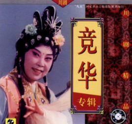

竞华
竞华先生原名董汝陵。四川成都人。出身川剧世家。八岁学艺。工旦。1942年后任桂华社、三庆会演员。建国后，历任成都市川剧院演员、副院长，成都市川剧研究所顾问，中国剧协第四届理事。以花旦见长，兼能反串小生，尤以小腔、花腔著称。代表剧目有《思凡》、《拷红》、《三祭江》等。1999年8月30日竞华因病溘然仙逝。
代表剧目
《拷红》、《思凡》、《三祭江》、《乔子口》等。
戏迷眼中的竞华
成都通信电缆厂年过五旬的张开玉女士10岁左右便迷上了川剧，更爱上了竞华的演唱艺术。当时，张开玉的父亲在“朵颐”（当时成都高档知名餐厅）与客商吃饭谈生意时，她听不懂，也不感兴趣，便自己跑去锦江剧场看川戏。慢慢地，她成了“戏迷”。1955年在锦江剧场看了川剧《芙蓉花仙》，张开玉不能忘怀。在戏中，竞华扮演芙蓉花仙，王成康扮演陈秋林，曼丽（竞华的母亲）扮演百花圣母，周学如、刘克莉、唐绪珍等人扮演众花仙，龚朝昆扮演书僮，杨昆山等扮演众神仙……这些40多年前的梨园往事，张开玉讲起来滔滔不绝，如同昨日之事那么清楚、亲切，她甚至可以仔细讲出竞华演芙蓉花仙不同出场的不同妆扮。张女士说，我是川戏迷，更是竞华艺术五体投地的崇拜者。她的家人曾开过这样的玩笑，说：“世界上只有两个人的川剧唱得好。第一是竞华，第二嘛，就算您了。”她听了，高兴10天半月不“降温”。
竞华得肺癌住院后，张女士多次到华西医学院附院高干病房去看望她。竞华在重病期间，始终未忘川剧振兴，她对张开玉说，等病好了以后，要组织“竞派”弟子联合演出。张开玉听了心里非常高兴，诚心诚意地说，我们川剧观众会全力支持您！竞华听了十分欣慰。有一次，张开玉又去看望竞华。竞华被她对川剧的挚爱深深感动。在病房中，主动为张开玉女士清唱了川剧《下游庵》的一段男腔。竞华虽然在重病之中，唱时声音不大，但韵味十足，风骨犹存，非常动人，令人倾倒。唱完后，竞华动情地对张开玉说：“这是我第一次（其实也是最后一次）在这病房中为观众清唱，尤其为一个戏迷清唱……”张开玉不觉泪流满面。